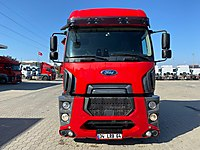

<!DOCTYPE html>
<html lang="tr">
<head>
  <meta charset="UTF-8">
  <meta http-equiv="X-UA-Compatible" content="IE=edge">
  <meta name="viewport" content="width=device-width, initial-scale=1.0">
  <title>TIR</title>
  <link rel="shortcut icon" type="s.png" href="s.png"/>
</head>
</html><meta charset="UTF-8" />
<link href="https://fonts.googleapis.com/css?family=Roboto" rel="stylesheet">
<div class="ana-bolum">
  
  <style>
    body{background-color:rgb(251, 255, 0);}
    
    .ana-bolum{
      font-family: 'Roboto', sans-serif;
      width:800px;
      margin:0 auto;
      display:table;
      padding:10px;
      border:1px solid rgb(255, 255, 255);
      background: rgb(255, 255, 255);
    }
    .ana-bolum .kutu{
      float:left;
      width:22%;
      height:auto;
      border:1px solid #ffffff;
      padding:1%;
      margin-right:7px;
    }
    .ana-bolum .kutu:nth-child(5n+4){
      margin-right:0;
    }
    .ana-bolum .kutu *{
      display:table;
      margin:0 auto;
    }
    .ana-bolum .kutu .baslik{
      margin-top:5px;
      font-size:20px;
      color:rgb(0, 0, 0);
      text-decoration:none;
    }
    .ana-bolum .kutu .aciklama{
      margin-top:3px;
      font-size:14px;
      color:#000000;
      text-decoration:none;
    }
    .ana-bolum .kutu .link{
      margin-top: 10px;
      font-size: 14px;
      text-decoration: none;
      border: 1px solid #000000;
      padding: 3px 10px;
      background: #000000;
      color: #f1f1f1;
    }
    .ana-bolum .kutu .fotograf{
      width:100%;
      height:auto;
      
    }
    .ana-bolum .kutu .fotograf img{
      width:100%;
      height:auto;
    }
    .ayirici{
      width:100%;
      height:2px;
      float:left;
    }
    body{ background-color: #ffffff; }   
@media screen and (min-width: 900px)
{
body{ background-color: #030303; }
}
@media screen and (min-width: 1100px)
{
body{ background-color: #fbff00; }
}

ul {
    list-style-type: none;
    margin: 0;
    padding: 0;
    overflow: hidden;
    background-color: #34495e;
}

li {
    display:inline-block;
}

li a {
    display: block;
    color: white;
    text-align: center;
    padding: 14px 16px;
    text-decoration: none;
}

li a:hover{
    background-color:#f39c12; 
}

ul li ul {
    background-color:#2c3e50;
    display:none;
    position:absolute;
    width:150px;
}

ul li:hover ul{
    display:block;
}
li ul li {
    display:block; 
}

 
  
  </style>
  <head>
 
  <d id="sagdakayan" style="position: fixed; right: 0px; top: 0px; z-index: 1;">
	</d>


   
	
	
 <ul>
	<li><a href="index(ana.sayfa).html">Ana sayfa</a></li>
  
	<li><a href="index(araba).html">ARABA</a></li>
	
	<li><a href="index(TIR).html">TIR</a></li>

	<li><a href="index(otobus).html">OTOBUS</a></li>
	<li><a href="#"></a></li>
	<li><a href="#"></a></li>
	<li><a href="#"></a></li>
	<li><a href="#"></a></li>
	<li><a href="#"></a></li>
	<li><a href="#"></a></li>
	<li><a href="#"></a></li>
	<li><a href="#"></a></li>
	<li><a href="#"></a></li>
	<li><a href="#"></a></li>

  
	<li><a href="#">DESTEK</a>
	 <ul>
  
		<li><a href="index(iletişim).html">İLETİŞİM</a></li>
  	<li><a href="index.html">ÇIKIŞ</a></li>

		
	  </ul>
	</li>
 </ul>

    <body>
<div class="ana-bolum">
	<div class="kutu">
		<a href="#" class="fotograf"></a>
		<a href="#" class="baslik"> Mercedes-Benz </a>
		<a href="#" class="aciklama"> Actros </a>
		<a href="https://www.sahibinden.com/ilan/vasita-ticari-araclar-cekici-ekremden-2021-model-mercedes-actros-1851-retarder-klima-1128688943/detay" title="" class="link">Detay</a>
	</div>
	<div class="kutu">
		<a href="#" class="fotograf"></a>
		<a href="#" class="baslik">Mercedes-Benz</a>
		<a href="#" class="aciklama">Actros</a>
		<a href="https://www.sahibinden.com/ilan/vasita-ticari-araclar-cekici-ekremden-2022-model-actros-1853-plus-paket-1128188409/detay" title="" class="link">Detay</a>
	</div>
	<div class="kutu">
		<a href="#" class="fotograf"></a>
		<a href="#" class="baslik">Mercedes-Benz</a>
		<a href="#" class="aciklama">Actros </a>
		<a href="https://www.sahibinden.com/ilan/vasita-ticari-araclar-cekici-mengullu-2013-model-actros-1844-retardarli-klimali-1140095048/detay" title="" class="link">Detay</a>
	</div>
	<div class="kutu">
		<a href="#" class="fotograf"></a>
		<a href="#" class="baslik">Mercedes-Benz</a>
		<a href="#" class="aciklama"> Axor</a>
		<a href="https://www.sahibinden.com/ilan/vasita-ticari-araclar-cekici-2009-model-calisan-arac-bakimli-motor-yeni-full-etek-takimli-1139583001/detay" title="" class="link">Detay</a>
	</div>
	<div class="ayirici"></div>
	<div class="kutu">
		<a href="#" class="fotograf"></a>
		<a href="#" class="baslik">Ford</a>
		<a href="#" class="aciklama">Cargo </a>
		<a href="https://www.sahibinden.com/ilan/vasita-ticari-araclar-cekici-truckstore-dan-2017-ford-1848t-midilli-mbkf-kampanyali-1133107430/detay" title="" class="link">Detay</a>
	</div>
	<div class="kutu">
		<a href="#" class="fotograf"></a>
		<a href="#" class="baslik">Ford </a>
		<a href="#" class="aciklama">F-Max</a>
		<a href="https://www.sahibinden.com/ilan/vasita-ticari-araclar-cekici-ercal-dan-2020-ford-fmax-500-otomatik-ac-cift-depo-midilli-1131097052/detay" title="" class="link">Detay</a>
	</div>
	<div class="kutu">
		<a href="#" class="fotograf"></a>
		<a href="#" class="baslik">Ford</a>
		<a href="#" class="aciklama">Cargo</a>
		<a href="https://www.sahibinden.com/ilan/vasita-ticari-araclar-cekici-truckstore-dan-2018-model-ford-cargo-1842-t-1136251417/detay" title="" class="link">Detay</a>
	</div>
	<div class="kutu">
		<a href="#" class="fotograf"></a>
		<a href="#" class="baslik">Ford</a>
		<a href="#" class="aciklama">F-Max</a>
		<a href="https://www.sahibinden.com/ilan/vasita-ticari-araclar-cekici-sahibinden-aktif-calisan-f-max-1136303263/detay" title="" class="link">Detay</a>
	</div>
  <div class="ana-bolum">
    <div class="kutu">
      <a href="#" class="fotograf"></a>
      <a href="#" class="baslik">MAN</a>
      <a href="#" class="aciklama"> TGS </a>
      <a href="https://www.sahibinden.com/ilan/vasita-ticari-araclar-cekici-ercal-dan-2016-man-tgs-400-klima-1140166482/detay" title="" class="link">Detay</a>
    </div>
    <div class="kutu">
      <a href="#" class="fotograf"></a>
      <a href="#" class="baslik">MAN</a>
      <a href="#" class="aciklama">TGA</a>
      <a href="https://www.sahibinden.com/ilan/vasita-ticari-araclar-cekici-koltas-dan-satilik-2006-model-man-18.430-tga-1140164963/detay" title="" class="link">Detay</a>
    </div>
    <div class="kutu">
      <a href="#" class="fotograf"></a>
      <a href="#" class="baslik">MAN</a>
      <a href="#" class="aciklama">TGX</a>
      <a href=" https://www.sahibinden.com/ilan/vasita-ticari-araclar-cekici-fuat-kamyon-dan-2011-model-man-tgx-18.400-retarder-ac-oto-vites-1122551837/detay" title="" class="link">Detay</a>
    </div>
    <div class="kutu">
      <a href="#" class="fotograf"></a>
      <a href="#" class="baslik"> MAN</a>
      <a href="#" class="aciklama"> TGX</a>
      <a href="https://www.sahibinden.com/ilan/vasita-ticari-araclar-cekici-2021-model-man-tgx-18.470-otomatik-dep-klima-buzdolabi-1139986954/detay link" title="" class="link">Detay</a>
    </div>
    <div class="ayirici"></div>
    <div class="kutu">
      <a href="#" class="fotograf"></a>
      <a href="#" class="baslik"> Scania </a>
      <a href="#" class="aciklama">R</a>
      <a href="https://www.sahibinden.com/ilan/vasita-ticari-araclar-cekici-2015-model-park-klima-buzdolap-full-plusfull-1134745828/detay" title="" class="link">Detay</a>
    </div>
    <div class="kutu">
      <a href="#" class="fotograf"></a>
      <a href="#" class="baslik"> Scania </a>
      <a href="#" class="aciklama"> S500</a>
      <a href="https://www.sahibinden.com/ilan/vasita-ticari-araclar-cekici-ercal-dan-2020-scania-s-500-dynamic-cift-depo-4-koruk-1134203708/detay" title="" class="link">Detay</a>
    </div>
    <div class="kutu">
      <a href="#" class="fotograf"></a>
      <a href="#" class="baslik"> Scania</a>
      <a href="#" class="aciklama"> G</a>
      <a href="https://www.sahibinden.com/ilan/vasita-ticari-araclar-cekici-2012-model-g420-e5-plus-roterdar-1139964959/detay" title="" class="link">Detay</a>
    </div>
    <div class="kutu">
      <a href="#" class="fotograf"></a>
      <a href="#" class="baslik"> Scania</a>
      <a href="#" class="aciklama"> R</a>
      <a href=" https://www.sahibinden.com/ilan/vasita-ticari-araclar-cekici-2007-model-r-420-roterdarli-motor-yeni-1134039023/detay" title="" class="link">Detay</a>
    </div>
  </div>
  </div>
  
</div>


</head></body>